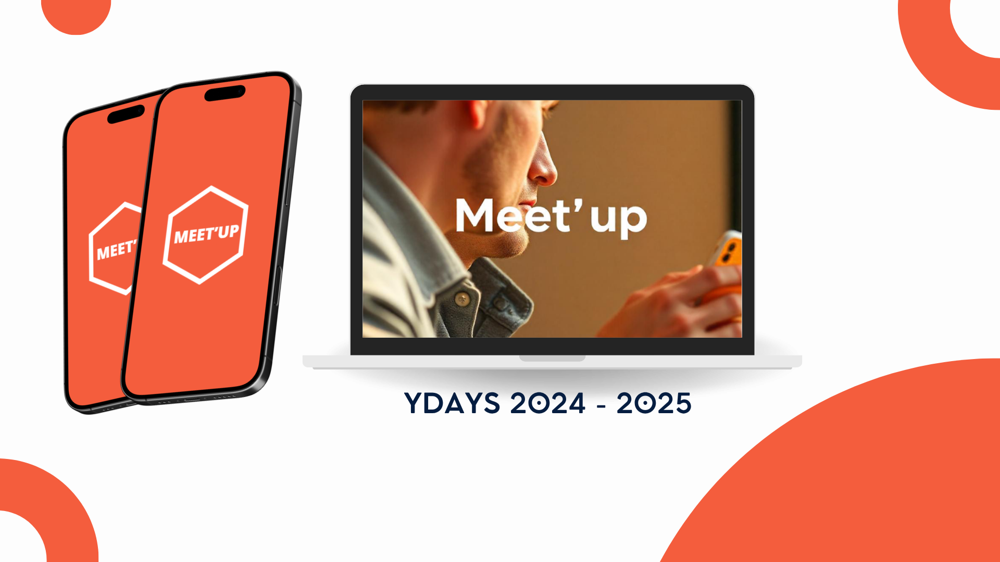
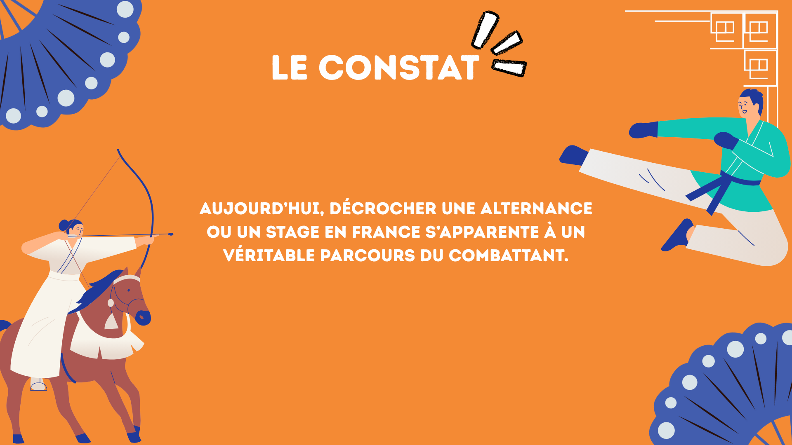
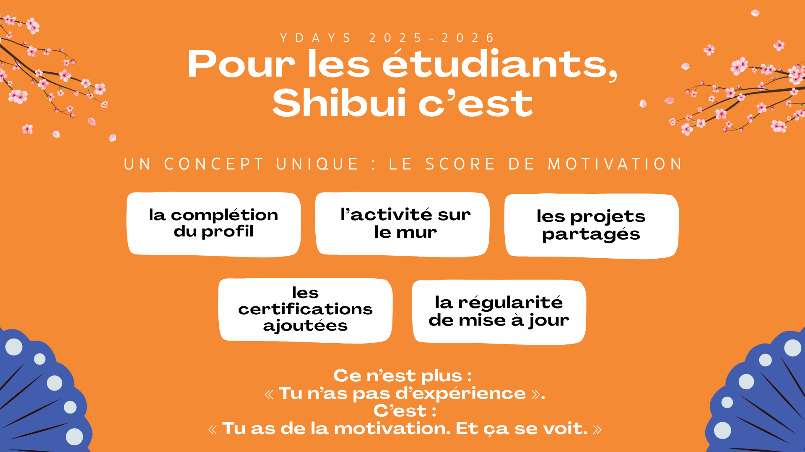

Fonctionnalités sorties en bêta
Une première version test a permis de faire sortir quelques briques du projet, notamment autour du profil, du score et de l’expérience candidat. La plateforme complète n’est pas encore lancée.
Portfolio & blog
Chef de projet d’un projet qui a mobilisé 16 personnes sur Meet’up, puis 12 sur Shibui, j’ai piloté sur deux ans l’évolution d’un projet école très ambitieux — Meet’up — vers Shibui : une application ciblée sur la recherche de stages et d’alternance, conçue par des étudiants, pour des étudiants.
Meet’up est né d’une double observation : le désintéressement croissant pour l’auto-formation d’un côté, et les difficultés réelles à la recherche d’emploi de l’autre. L’idée : un écosystème complet dédié au développement personnel et professionnel, mélant IA, gamification et mise en relation.

Une première version test a permis de faire sortir quelques briques du projet, notamment autour du profil, du score et de l’expérience candidat. La plateforme complète n’est pas encore lancée.
Outils IA d’aide au développement professionnel, quêtes personnalisées, espace formation, communauté et modèle premium faisaient partie de la vision produit à atteindre progressivement.
L’objectif était aussi d’imaginer un espace recruteur pour identifier des candidats autrement que par le CV seul, grâce à des signaux comme la motivation, la progression et l’engagement.
Trois contraintes majeures identifiées : l’intégration de fonctionnalités trop avancées, l’adoption et l’engagement des utilisateurs, et la validation du modèle économique. Le projet était présenté devant jury — solide sur la vision, mais trop dispersé sur l’exécution. La décision a été prise de tout recentrer.
Aujourd’hui en France, trouver un stage ou une alternance est un véritable parcours du combattant — pas par manque de motivation des étudiants, mais parce que le système n’est pas pensé pour eux.

1,1M
Étudiants en alternance
Plus d’un million concernés par la problématique chaque année. (Source : INSEE)
37%
Difficultés majeures
Des étudiants en alternance rencontrent des difficultés majeures pour trouver une entreprise. (Source : INSEE)
75%
CV éliminés
Des CV peuvent être éliminés avant même d’être lus par un recruteur. (Source : Jobtease)
Shibui est une application dédiée exclusivement à la recherche de stages et d’alternance — conçue pour mettre en valeur le potentiel de chaque étudiant, même sans expérience, même sans réseau.
CV intégré, certifications, langues, portfolio, projets d’école, projets personnels… Shibui construit un profil complet qui va bien au-delà du simple CV. Un mur d’activité personnel permet de partager ses réalisations, ses objectifs, ses progrès — comme un mini-réseau social focalisé sur l’évolution professionnelle.
Shibui ne met pas en avant les profils « les plus expérimentés », mais les plus motivés. Un score calculé sur la complétion du profil, l’activité sur le mur, les certifications ajoutées et la régularité de mise à jour. Le message : « Tu n’as pas d’expérience ? Tu as de la motivation. Et ça se voit. »

Visibilité, équité, mise en valeur du potentiel. En 20 secondes, trouver ce qui correspond grâce aux filtres (localisation, durée, domaine, type de contrat).
Gain de temps, tri intelligent. Une PME ne trie plus 200 CV : elle accède directement aux candidats motivés, actifs, alignés avec son profil.
Un outil de gestion, de visibilité et d’attractivité. Convaincre une école, c’est crédibiliser le projet ; convaincre plusieurs écoles, c’est créer un écosystème.
Structuration et animation d’équipes pluridisciplinaires : 16 personnes coordonnées pendant la phase Meet’up, puis une équipe resserrée de 12 sur Shibui. UX-UI designers, développeurs et profils business : répartition des rôles, suivi de l’avancement et gestion des dépendances entre pôles. Outils : Notion, Trello, Discord, GitHub.
Participation à l’analyse du marché de l’alternance, identification des problématiques clés pour chacune des trois cibles (étudiants, recruteurs, écoles) et traduction en fonctionnalités prioritaires pour un MVP cible.
Co-construction de la présentation pour les Y-Days 2025–2026 : structuration du problème, argumentation chiffrée, storytelling du pivot Meet’up → Shibui, et défense devant jury d’école.
Pilotage du calendrier de développement (octobre → mai) : maquettes Figma, modèle économique freemium, pistes de partenariats écoles, priorisation des fonctionnalités essentielles et préparation d’une version bêta partielle.
16
Personnes coordonnées
Chiffre de la phase Meet’up. Shibui a ensuite avancé avec une équipe resserrée de 12.
7
Mois de projet
D’octobre à mai, de l’analyse marché à la préparation d’une bêta partielle.
3
Cibles utilisateurs
Étudiants, recruteurs et écoles — trois angles d’attaque pour un écosystème complet.
Pivoter n’est pas échouer — c’est mûrir. Meet’up était trop ambitieux ; Shibui est la preuve qu’on a su écouter ce signal et recentrer le tir. Ce passage de l’un à l’autre est l’une des décisions dont je suis le plus fier : accepter de jeter une partie du travail pour construire quelque chose de réellement solide.
Coordonner jusqu’à 16 personnes sur Meet’up, puis 12 sur Shibui, m’a appris que la clarté de la vision vaut mieux que la multiplication des fonctionnalités. Quand tout le monde comprend le pourquoi, le comment se met en place naturellement.
Et le score de motivation, cette idée de mettre en avant ce qu’on appelle « les invisibles » — les étudiants sans réseau, sans expérience, mais avec de l’engagement — c’est la conviction qui donne son âme au projet. Rendre visibles ceux que les systèmes classiques ne voient pas.